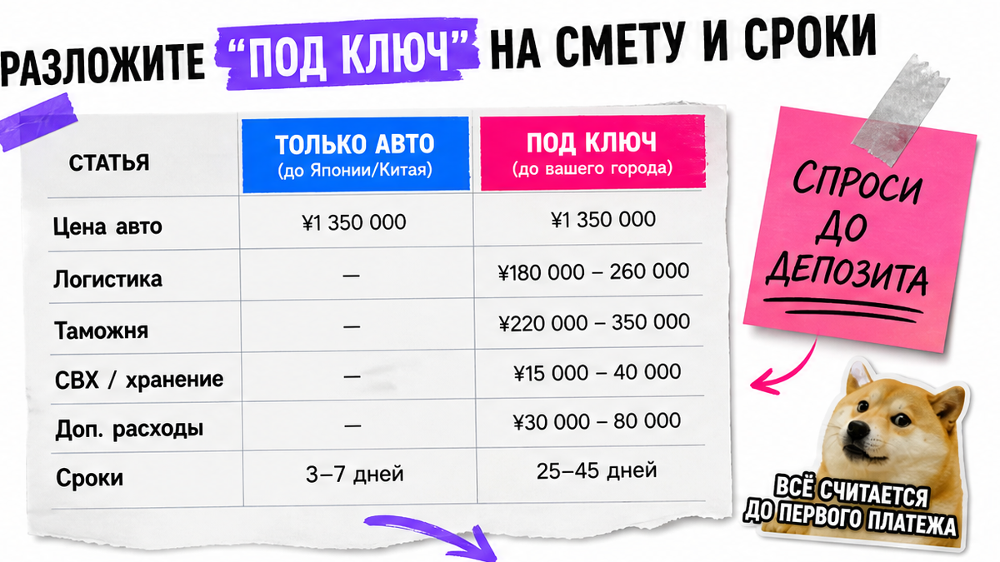
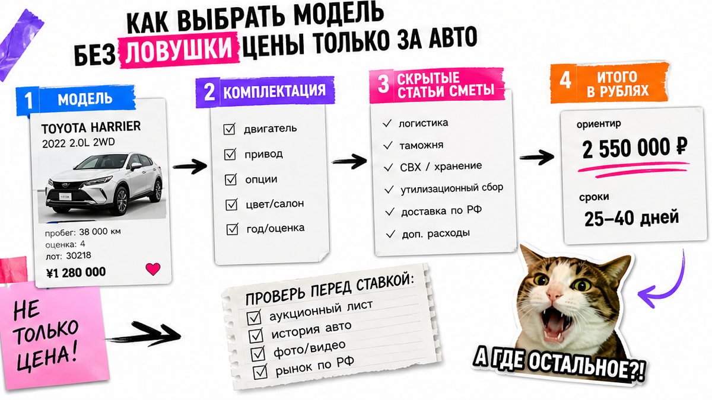
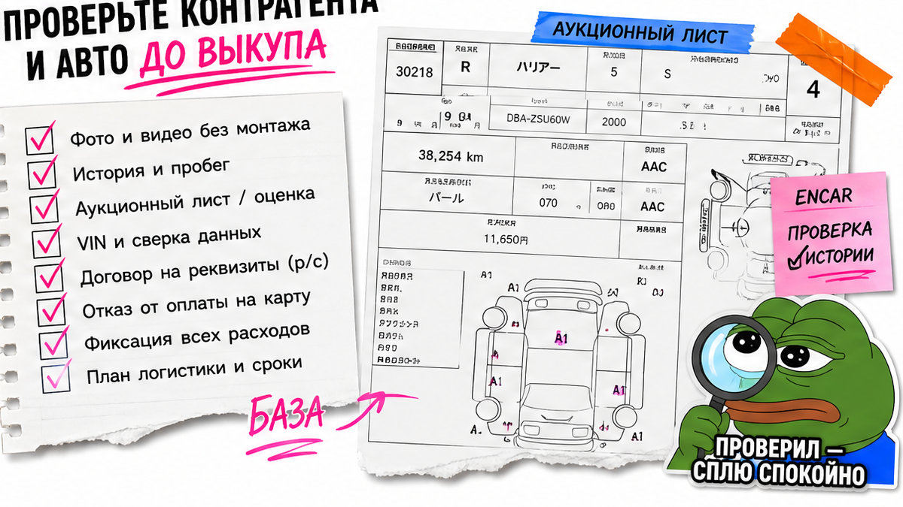

Игорь из Новосибирска почти перевёл 150 тысяч "на карту менеджера" за Haval "под ключ за 1,9 млн". Ни юрлица, ни сметы в рублях, ни ответа, что будет с деньгами, если машину не выпустят из Китая. Типичная боль первого заказа: хочется кроссовер как у знакомого, а страшно остаться без авто и без предоплаты. Ниже – как безопасно заказать авто из Китая под ключ: чек-лист до депозита, чтобы переводить деньги только после договора, VIN и фиксированной цены.
TL;DR / Быстрый инсайт: "Под ключ" – это не цена в юанях с площадки, а полная смета в рублях: авто + логистика + таможня/утиль + оформление + комиссия. До депозита нужны договор на р/с компании, разбивка цены, VIN или жёсткие критерии и схема экспорта. С 2026 у "свежих" авто с учётом до 180 дней в КНР часто нужна справка завода – без неё вывоз может встать уже после вашей предоплаты.
Мы в Авто-Сейлс во Владивостоке видим одни и те же вопросы: можно ли заказать авто из Китая самому и куда смотреть, чтобы не купить "картинку в Telegram". Гайд останавливает на шаге "до депозита" – без EV-разбора и без калькулятора пошлин. Точный расчёт машины – в каталоге, здесь – порядок действий.

На пальцах: объявление на площадке показывает цену у продавца. Вам нужна цена в России "под ключ" – до ключей на руках. На практике накладные часто +15–40% к цене авто; сумма в чате без разбивки – ещё не смета.
| Что слышите | Что должно быть в смете | Красный флаг |
|---|---|---|
| Цена авто в юанях | Итог в рублях до договора | "Остальное посчитаем потом" |
| "Доставка включена" | Логистика + порт/СВХ отдельной строкой | Нет маршрута и точек контроля |
| "Растаможка примерно" | Таможня/утиль и оформление (СБКТС/ЭПТС) в смете | Нет фиксации состава услуг |
| "Через две недели у вас" | Реалистичный цикл после готовности к экспорту | Обещание сроков без оговорок |
Ориентир: у части импортёров до ~37 дней, по Китаю часто 20–45 дней после готовности к вывозу; на Drive2 с выкупа нередко 35–60 дней. "Две недели под ключ" – повод замедлиться.
Сделайте: запросите смету в рублях с пятью блоками до перевода. Не делайте: не принимайте "цену только за машину" за итог авто из Китая под заказ.

Например, знакомый хвалит комплектацию, а в объявлении – сумма без таможни и логистики. Вы "экономите" на бумаге. Сначала зафиксируйте бюджет под ключ и тип авто: ДВС/кроссовер или электро. EV – отдельно у менеджера; здесь первый заказ обычного кроссовера под ключ.
Сделайте: сравнивайте предложения только по полной смете. Не делайте: не гонитесь за самой низкой ценой в юанях без маршрута и договора – избегайте такой ловушки.

Типичная ошибка – довериться чату и "менеджеру Саше" без названия ООО. Платить нужно на расчётный счёт ИП или ООО по реквизитам из договора, а не на карту физлица. До выкупа попросите VIN конкретного авто или точные критерии подбора, фото и короткое видео осмотра, краткий отчёт по истории. VIN в переписке и в договоре должен совпадать.
Тут важный момент про 2026 год. С 1 января для вывоза из Китая авто, с регистрации которого прошло не больше 180 дней, нужна справка завода-изготовителя о послепродажном обслуживании. Без неё экспортную лицензию не дают – и "дешёвая свежая" машина может застрять в КНР уже после вашей предоплаты. До депозита спросите дату регистрации в Китае и схему экспорта.
Сделайте: проверьте юрлицо, отзывы вне чата продавца, VIN и экспортный пакет до оплаты. Не делайте: не переводите "сегодня, а то уйдёт" без документов и без ответа про 180 дней.
Схема до депозита:
Бюджет под ключ → Модель и критерии → Смета в рублях → Юрлицо и договор → VIN/фото/видео → Экспорт (в т.ч. 180 дней) → Депозит на р/с
Договор – ваш стоп-кран: VIN или критерии авто, фикс цена под ключ, состав услуг, сроки, оплата, ответственность и возврат депозита. Если пишут "деньги не возвращаются никогда" без встречных обязательств – не подписывайте.
Параллельный импорт опирается на ПП РФ №506 и перечень Минпромторга – легальный каркас, не "серая схема из чата". Закон всё равно не заменяет ваш договор с конкретной компанией.
Сделайте: прочитайте образец договора до оплаты и закройте дыры по возврату и срокам. Не делайте: не соглашайтесь на оплату "по дружбе" до подписания.
Владивосток для многих заказов из Азии – понятная точка: порт, СВХ (склад, где машина ждёт таможенных процедур), затем выдача или доставка по России. Вам не нужно стать логистом – нужны маршрут, фотоотчёты на этапах и кто за что отвечает.
Маршрут простыми словами:
Подбор и выкуп в Китае → Экспорт и отправка → Порт РФ / Владивосток → СВХ и оформление → Выдача или доставка в ваш город
Сделайте: запишите точки контроля и формат отчётов. Не делайте: не верьте обещанию "мы всё сами" без контрольного этапа в договоре.
Нужна смета по конкретной модели – откройте каталог avto-sales125.ru и уточните детали в Telegram @avtosales125. Форм на странице нет: расчёт и бронь живут в каталоге и переписке.
Критерий успеха: перед переводом депозита у вас есть письменный договор (или готовый к подписи образец), разбивка цены под ключ, VIN или жёсткие критерии, фото/видео и понятный ответ, что будет при срыве сроков. Если чего-то нет – депозит подождёт.
Только после этого вносите депозит и платите ступенями: выкуп, отправка, таможня. Так заказ авто из Китая под заказ идёт с контролем на каждом шаге.
Сделайте: пройдите чеклист сверху вниз. Не делайте: не пропускайте пункты "чтобы не обидеть менеджера". Избегайте перевода, пока список не закрыт.
Нужен расчёт конкретной машины – зайдите в каталог Авто-Сейлс. Офис во Владивостоке: Днепровская 40а, строение 4. Отзывы – на 2GIS.
Материал проверен: Редакция Авто-Сейлс – эксперты по авто под заказ из Японии, Кореи и Китая (Владивосток).
Достоверность: сверка с уведомлением КНР о правиле 180 дней (gov.cn, 商贸函〔2025〕648号), ПП РФ №506 и практикой сопровождения заказов; сметы по моделям – в каталоге, без калькулятора пошлин в тексте.
Почти всегда нет в смысле "как на маркетплейсе". Покупка у резидента КНР, расчёты в юанях и экспортная лицензия требуют связки экспортёр/импортёр. На практике новичок выбирает компанию с договором, а не проходит цепочку сам.
Грубо: подбор → проверка и договор → депозит и выкуп → экспорт и логистика → порт/СВХ и оформление → выдача или доставка. По срокам ориентируйтесь на десятки дней после готовности к экспорту, а не на обещание "двух недель под ключ".
Базовый путь похож: смета, договор, VIN, логистика. У электро другие нюансы по документам и эксплуатации. Если целитесь в EV – уточните у менеджера отдельно; этот гайд про первый заказ "под ключ" до депозита.
На рынке депозит часто описывают как сумму порядка десятков–сотен тысяч рублей или процент от сделки. Смотрите договор: куда платите, когда списывают, при каких условиях возвращают. Нет прозрачных условий – не переводите.
Уточните дату первой регистрации в Китае и нужна ли справка завода при сроке учёта до 180 дней. Без этого пакета "почти новая" может не получить экспортную лицензию уже после предоплаты.
Только на расчётный счёт ИП/ООО по реквизитам из договора. Карта физлица и оплата до образца договора – стоп. Если сомневаетесь в формулировках, задайте вопросы в Telegram @avtosales125 до перевода.